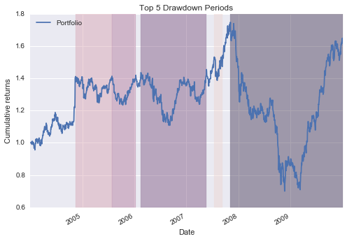
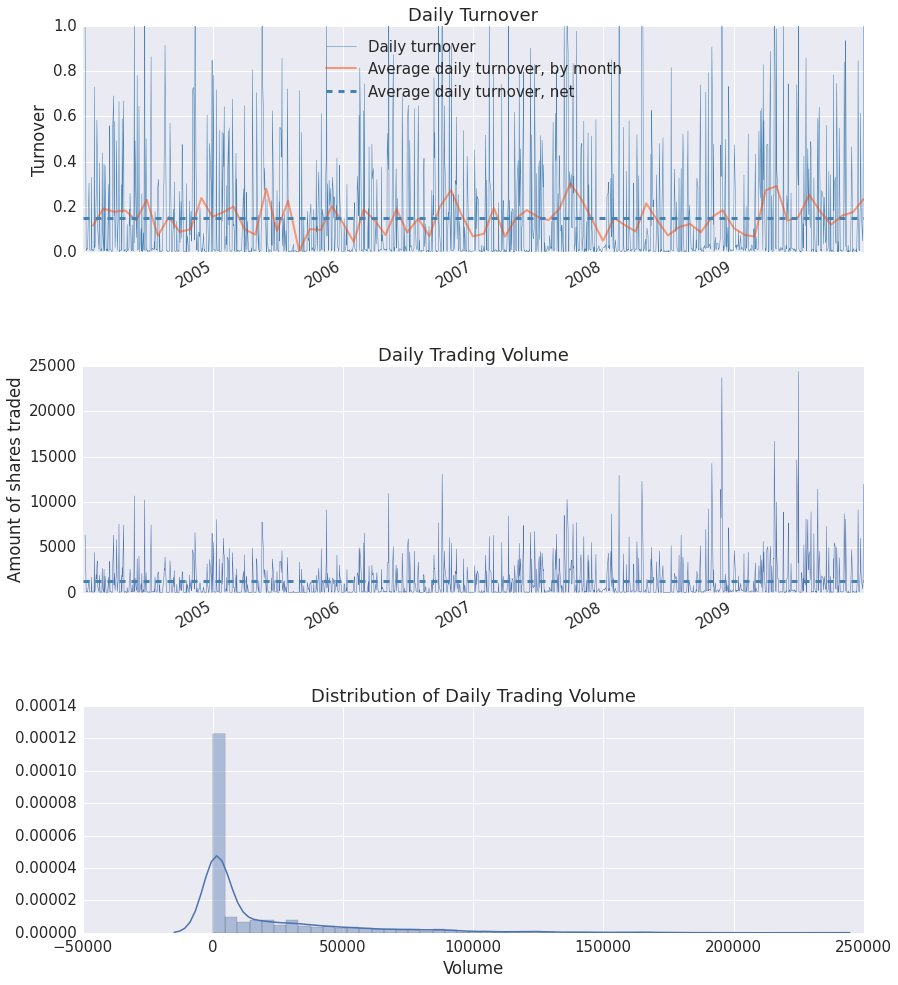
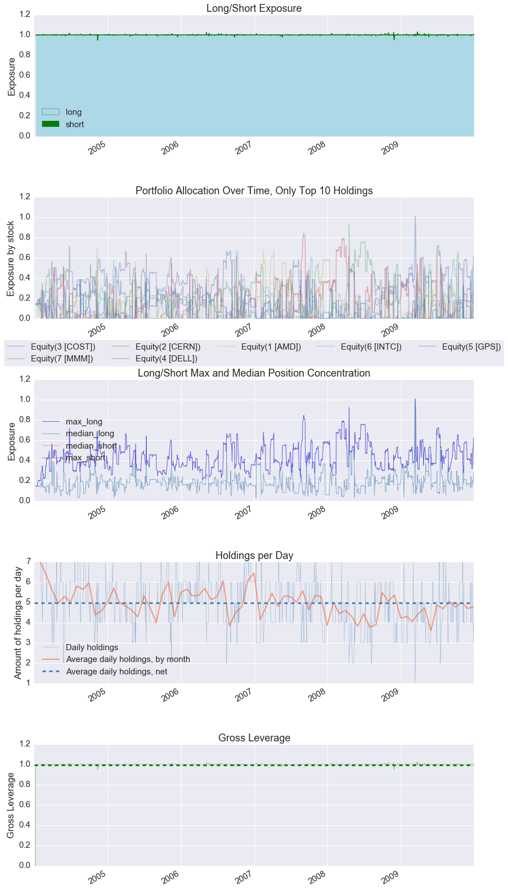
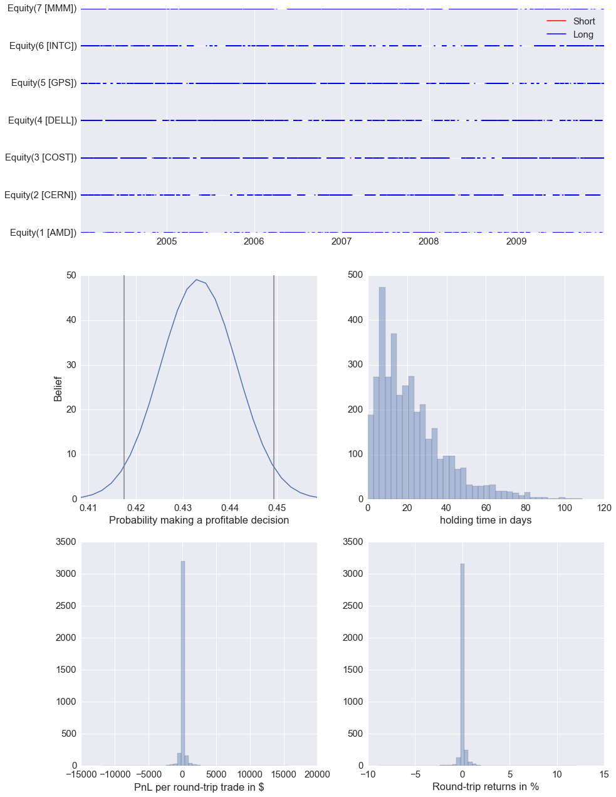
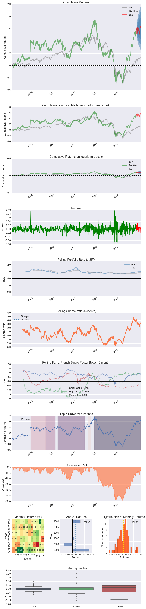
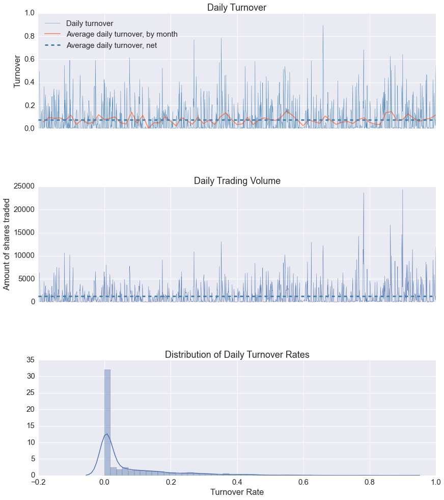

Zipline algorithm analysis example in pyfolio
Here's an example where we run an algorithm with zipline, then produce tear sheets for that algorithm.
Imports
Import pyfolio, along with the necessary modules for running our zipline backtest.
%matplotlib inline
import pyfolio as pf
import sys
import logbook
import numpy as np
from datetime import datetime
import pytz
from zipline.algorithm import TradingAlgorithm
from zipline.utils.factory import load_from_yahoo
from zipline.finance import commission
Run our zipline algorithm
This algorithm can also be adjusted to execute a modified, or completely different, trading strategy.
# Zipline trading algorithm
# Taken from zipline.examples.olmar
zipline_logging = logbook.NestedSetup([
logbook.NullHandler(level=logbook.DEBUG),
logbook.StreamHandler(sys.stdout, level=logbook.INFO),
logbook.StreamHandler(sys.stderr, level=logbook.ERROR),
])
zipline_logging.push_application()
STOCKS = ['AMD', 'CERN', 'COST', 'DELL', 'GPS', 'INTC', 'MMM']
# On-Line Portfolio Moving Average Reversion
# More info can be found in the corresponding paper:
# http://icml.cc/2012/papers/168.pdf
def initialize(algo, eps=1, window_length=5):
algo.stocks = STOCKS
algo.sids = [algo.symbol(symbol) for symbol in algo.stocks]
algo.m = len(algo.stocks)
algo.price = {}
algo.b_t = np.ones(algo.m) / algo.m
algo.last_desired_port = np.ones(algo.m) / algo.m
algo.eps = eps
algo.init = True
algo.days = 0
algo.window_length = window_length
algo.set_commission(commission.PerShare(cost=0))
def handle_data(algo, data):
algo.days += 1
if algo.days < algo.window_length:
return
if algo.init:
rebalance_portfolio(algo, data, algo.b_t)
algo.init = False
return
m = algo.m
x_tilde = np.zeros(m)
b = np.zeros(m)
# find relative moving average price for each asset
mavgs = data.history(algo.sids, 'price', algo.window_length, '1d').mean()
for i, sid in enumerate(algo.sids):
price = data.current(sid, "price")
# Relative mean deviation
x_tilde[i] = mavgs[sid] / price
###########################
# Inside of OLMAR (algo 2)
x_bar = x_tilde.mean()
# market relative deviation
mark_rel_dev = x_tilde - x_bar
# Expected return with current portfolio
exp_return = np.dot(algo.b_t, x_tilde)
weight = algo.eps - exp_return
variability = (np.linalg.norm(mark_rel_dev)) ** 2
# test for divide-by-zero case
if variability == 0.0:
step_size = 0
else:
step_size = max(0, weight / variability)
b = algo.b_t + step_size * mark_rel_dev
b_norm = simplex_projection(b)
np.testing.assert_almost_equal(b_norm.sum(), 1)
rebalance_portfolio(algo, data, b_norm)
# update portfolio
algo.b_t = b_norm
def rebalance_portfolio(algo, data, desired_port):
# rebalance portfolio
desired_amount = np.zeros_like(desired_port)
current_amount = np.zeros_like(desired_port)
prices = np.zeros_like(desired_port)
if algo.init:
positions_value = algo.portfolio.starting_cash
else:
positions_value = algo.portfolio.positions_value + \
algo.portfolio.cash
for i, sid in enumerate(algo.sids):
current_amount[i] = algo.portfolio.positions[sid].amount
prices[i] = data.current(sid, "price")
desired_amount = np.round(desired_port * positions_value / prices)
algo.last_desired_port = desired_port
diff_amount = desired_amount - current_amount
for i, sid in enumerate(algo.sids):
algo.order(sid, diff_amount[i])
def simplex_projection(v, b=1):
"""Projection vectors to the simplex domain
Implemented according to the paper: Efficient projections onto the
l1-ball for learning in high dimensions, John Duchi, et al. ICML 2008.
Implementation Time: 2011 June 17 by Bin@libin AT pmail.ntu.edu.sg
Optimization Problem: min_{w}\| w - v \|_{2}^{2}
s.t. sum_{i=1}^{m}=z, w_{i}\geq 0
Input: A vector v \in R^{m}, and a scalar z > 0 (default=1)
Output: Projection vector w
:Example:
>>> proj = simplex_projection([.4 ,.3, -.4, .5])
>>> print(proj)
array([ 0.33333333, 0.23333333, 0. , 0.43333333])
>>> print(proj.sum())
1.0
Original matlab implementation: John Duchi (jduchi@cs.berkeley.edu)
Python-port: Copyright 2013 by Thomas Wiecki (thomas.wiecki@gmail.com).
"""
v = np.asarray(v)
p = len(v)
# Sort v into u in descending order
v = (v > 0) * v
u = np.sort(v)[::-1]
sv = np.cumsum(u)
rho = np.where(u > (sv - b) / np.arange(1, p + 1))[0][-1]
theta = np.max([0, (sv[rho] - b) / (rho + 1)])
w = (v - theta)
w[w < 0] = 0
return w
start = datetime(2004, 1, 1, 0, 0, 0, 0, pytz.utc)
end = datetime(2010, 1, 1, 0, 0, 0, 0, pytz.utc)
# Load price data from yahoo.
data = load_from_yahoo(stocks=STOCKS, indexes={}, start=start, end=end)
data = data.dropna()
# Create and run the algorithm.
olmar = TradingAlgorithm(handle_data=handle_data, initialize=initialize)
results = olmar.run(data)
[2016-04-21 09:37:33.915336] INFO: Loader: Loading stock: AMD
[2016-04-21 09:37:33.926626] INFO: Loader: Loading stock: CERN
[2016-04-21 09:37:33.936490] INFO: Loader: Loading stock: COST
[2016-04-21 09:37:33.951613] INFO: Loader: Loading stock: DELL
[2016-04-21 09:37:33.965023] INFO: Loader: Loading stock: GPS
[2016-04-21 09:37:33.976631] INFO: Loader: Loading stock: INTC
[2016-04-21 09:37:33.987218] INFO: Loader: Loading stock: MMM
[2016-04-21 09:37:50.955240] INFO: Performance: Simulated 1511 trading days out of 1511.
[2016-04-21 09:37:50.956092] INFO: Performance: first open: 2004-01-02 14:31:00+00:00
[2016-04-21 09:37:50.956915] INFO: Performance: last close: 2009-12-31 21:00:00+00:00
Extract metrics
Get the returns, positions, and transactions from the zipline backtest object.
returns, positions, transactions, gross_lev = pf.utils.extract_rets_pos_txn_from_zipline(results)
Single plot example
Make one plot of the top 5 drawdown periods.
pf.plot_drawdown_periods(returns, top=5).set_xlabel('Date')
<matplotlib.text.Text at 0x7fd6ff3d9198>

Full tear sheet example
Create a full tear sheet for our algorithm. As an example, set the live start date to something arbitrary.
pf.create_full_tear_sheet(returns, positions=positions, transactions=transactions,
gross_lev=gross_lev, live_start_date='2009-10-22', round_trips=True)
Entire data start date: 2004-01-02
Entire data end date: 2009-12-31
Out-of-Sample Months: 2
Backtest Months: 69
| Performance statistics | All history | Backtest | Out of sample |
|---|---|---|---|
| annual_return | 0.08 | 0.08 | 0.03 |
| annual_volatility | 0.25 | 0.26 | 0.22 |
| sharpe_ratio | 0.44 | 0.43 | 0.25 |
| calmar_ratio | 0.14 | 0.14 | 0.42 |
| stability_of_timeseries | -0.01 | -0.09 | 0.22 |
| max_drawdown | -0.60 | -0.60 | -0.07 |
| omega_ratio | 1.08 | 1.08 | 1.04 |
| sortino_ratio | 0.65 | 0.64 | 0.34 |
| skew | 0.27 | 0.28 | -0.28 |
| kurtosis | 4.05 | 4.10 | 0.47 |
| tail_ratio | 0.97 | 0.99 | 1.24 |
| common_sense_ratio | 1.05 | 1.07 | 1.27 |
| information_ratio | 0.02 | 0.02 | -0.05 |
| alpha | 0.08 | 0.08 | -0.11 |
| beta | 0.81 | 0.81 | 1.18 |
| Worst Drawdown Periods | net drawdown in % | peak date | valley date | recovery date | duration |
|---|---|---|---|---|---|
| 0 | 59.91 | 2007-11-06 | 2008-11-20 | NaT | NaN |
| 1 | 22.79 | 2006-02-16 | 2006-08-31 | 2007-05-22 | 329 |
| 2 | 12.70 | 2005-07-28 | 2005-10-12 | 2006-01-11 | 120 |
| 3 | 11.65 | 2004-11-15 | 2005-04-28 | 2005-07-28 | 184 |
| 4 | 9.50 | 2007-07-16 | 2007-08-06 | 2007-09-13 | 44 |
[-0.032 -0.069]

| Stress Events | mean | min | max |
|---|---|---|---|
| Lehmann | -0.26% | -4.45% | 4.41% |
| Aug07 | 0.34% | -2.96% | 3.02% |
| Mar08 | -0.44% | -3.10% | 3.33% |
| Sept08 | -0.64% | -4.35% | 3.99% |
| 2009Q1 | -0.36% | -4.99% | 3.35% |
| 2009Q2 | 0.71% | -3.78% | 6.15% |
| Low Volatility Bull Market | 0.01% | -6.13% | 6.40% |
| GFC Crash | -0.08% | -7.59% | 9.70% |
| Recovery | 0.32% | -3.78% | 6.15% |

| Top 10 long positions of all time | max |
|---|---|
| sid | |
| Equity(3 [COST]) | 100.76% |
| Equity(7 [MMM]) | 92.38% |
| Equity(2 [CERN]) | 84.49% |
| Equity(4 [DELL]) | 71.71% |
| Equity(1 [AMD]) | 71.05% |
| Equity(6 [INTC]) | 66.55% |
| Equity(5 [GPS]) | 62.13% |
| Top 10 short positions of all time | max |
|---|---|
| sid |
| Top 10 positions of all time | max |
|---|---|
| sid | |
| Equity(3 [COST]) | 100.76% |
| Equity(7 [MMM]) | 92.38% |
| Equity(2 [CERN]) | 84.49% |
| Equity(4 [DELL]) | 71.71% |
| Equity(1 [AMD]) | 71.05% |
| Equity(6 [INTC]) | 66.55% |
| Equity(5 [GPS]) | 62.13% |
| All positions ever held | max |
|---|---|
| sid | |
| Equity(3 [COST]) | 100.76% |
| Equity(7 [MMM]) | 92.38% |
| Equity(2 [CERN]) | 84.49% |
| Equity(4 [DELL]) | 71.71% |
| Equity(1 [AMD]) | 71.05% |
| Equity(6 [INTC]) | 66.55% |
| Equity(5 [GPS]) | 62.13% |


| Summary stats | All trades | Long trades |
|---|---|---|
| Total number of round_trips | 3729.00 | 3729.00 |
| Percent profitable | 0.43 | 0.43 |
| Winning round_trips | 1616.00 | 1616.00 |
| Losing round_trips | 2113.00 | 2113.00 |
| Even round_trips | 0.00 | 0.00 |
| PnL stats | All trades | Long trades |
|---|---|---|
| Total profit | $61673.54 | $61673.54 |
| Gross profit | $376899.39 | $376899.39 |
| Gross loss | $-315225.85 | $-315225.85 |
| Profit factor | $1.20 | $1.20 |
| Avg. trade net profit | $16.54 | $16.54 |
| Avg. winning trade | $233.23 | $233.23 |
| Avg. losing trade | $-149.18 | $-149.18 |
| Ratio Avg. Win:Avg. Loss | $1.56 | $1.56 |
| Largest winning trade | $15541.78 | $15541.78 |
| Largest losing trade | $-12468.25 | $-12468.25 |
| Duration stats | All trades | Long trades |
|---|---|---|
| Avg duration | 22 days 05:36:44.023330 | 22 days 05:36:44.023330 |
| Median duration | 18 days 00:00:00 | 18 days 00:00:00 |
| Avg # round_trips per day | 34.53 | 34.53 |
| Avg # round_trips per month | 725.08 | 725.08 |
| Return stats | All trades | Long trades |
|---|---|---|
| Avg returns all round_trips | 0.01% | 0.01% |
| Avg returns winning | 0.19% | 0.19% |
| Avg returns losing | -0.13% | -0.13% |
| Median returns all round_trips | -0.00% | -0.00% |
| Median returns winning | 0.03% | 0.03% |
| Median returns losing | -0.01% | -0.01% |
| Largest winning trade | 12.12% | 12.12% |
| Largest losing trade | -9.15% | -9.15% |
| Symbol stats | Equity(1 [AMD]) | Equity(2 [CERN]) | Equity(3 [COST]) | Equity(4 [DELL]) | Equity(5 [GPS]) | Equity(6 [INTC]) | Equity(7 [MMM]) |
|---|---|---|---|---|---|---|---|
| Avg returns all round_trips | -0.00% | 0.03% | 0.03% | -0.04% | -0.01% | 0.04% | 0.01% |
| Avg returns winning | 0.41% | 0.22% | 0.15% | 0.15% | 0.15% | 0.19% | 0.12% |
| Avg returns losing | -0.34% | -0.15% | -0.06% | -0.18% | -0.10% | -0.07% | -0.08% |
| Median returns all round_trips | -0.00% | -0.00% | -0.00% | -0.00% | -0.00% | -0.00% | -0.00% |
| Median returns winning | 0.10% | 0.03% | 0.03% | 0.02% | 0.04% | 0.06% | 0.02% |
| Median returns losing | -0.02% | -0.01% | -0.01% | -0.01% | -0.01% | -0.00% | -0.01% |
| Largest winning trade | 12.12% | 5.91% | 2.95% | 2.48% | 3.52% | 2.32% | 2.23% |
| Largest losing trade | -9.15% | -4.68% | -3.41% | -5.87% | -8.27% | -4.61% | -3.84% |
| Profitability (PnL / PnL total) per name | pnl |
|---|---|
| symbol | |
| Equity(6 [INTC]) | 0.44% |
| Equity(3 [COST]) | 0.40% |
| Equity(2 [CERN]) | 0.34% |
| Equity(7 [MMM]) | 0.18% |
| Equity(5 [GPS]) | 0.02% |
| Equity(1 [AMD]) | -0.06% |
| Equity(4 [DELL]) | -0.32% |
<matplotlib.figure.Figure at 0x7fd6f7c5a6a0>

Suppressing symbol output
When sharing tear sheets it might be undesirable to display which symbols where used by a strategy. To suppress these in the tear sheet you can pass hide_positions=True.
pf.create_full_tear_sheet(returns, positions=positions, transactions=transactions,
gross_lev=gross_lev, live_start_date='2009-10-22',
hide_positions=True)
Entire data start date: 2004-01-02
Entire data end date: 2009-12-31
Out-of-Sample Months: 2
Backtest Months: 69
| Performance statistics | All history | Backtest | Out of sample |
|---|---|---|---|
| annual_return | 0.08 | 0.08 | 0.03 |
| annual_volatility | 0.25 | 0.26 | 0.22 |
| sharpe_ratio | 0.44 | 0.43 | 0.25 |
| calmar_ratio | 0.14 | 0.14 | 0.42 |
| stability_of_timeseries | -0.01 | -0.09 | 0.22 |
| max_drawdown | -0.60 | -0.60 | -0.07 |
| omega_ratio | 1.08 | 1.08 | 1.04 |
| sortino_ratio | 0.65 | 0.64 | 0.34 |
| skew | 0.27 | 0.28 | -0.28 |
| kurtosis | 4.05 | 4.10 | 0.47 |
| tail_ratio | 0.97 | 0.99 | 1.24 |
| common_sense_ratio | 1.05 | 1.07 | 1.27 |
| information_ratio | 0.02 | 0.02 | -0.05 |
| alpha | 0.08 | 0.08 | -0.11 |
| beta | 0.81 | 0.81 | 1.18 |
| Worst Drawdown Periods | net drawdown in % | peak date | valley date | recovery date | duration |
|---|---|---|---|---|---|
| 0 | 59.91 | 2007-11-06 | 2008-11-20 | NaT | NaN |
| 1 | 22.79 | 2006-02-16 | 2006-08-31 | 2007-05-22 | 329 |
| 2 | 12.70 | 2005-07-28 | 2005-10-12 | 2006-01-11 | 120 |
| 3 | 11.65 | 2004-11-15 | 2005-04-28 | 2005-07-28 | 184 |
| 4 | 9.50 | 2007-07-16 | 2007-08-06 | 2007-09-13 | 44 |
[-0.032 -0.069]

| Stress Events | mean | min | max |
|---|---|---|---|
| Lehmann | -0.26% | -4.45% | 4.41% |
| Aug07 | 0.34% | -2.96% | 3.02% |
| Mar08 | -0.44% | -3.10% | 3.33% |
| Sept08 | -0.64% | -4.35% | 3.99% |
| 2009Q1 | -0.36% | -4.99% | 3.35% |
| 2009Q2 | 0.71% | -3.78% | 6.15% |
| Low Volatility Bull Market | 0.01% | -6.13% | 6.40% |
| GFC Crash | -0.08% | -7.59% | 9.70% |
| Recovery | 0.32% | -3.78% | 6.15% |
